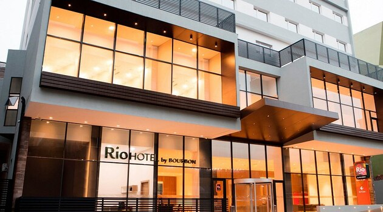
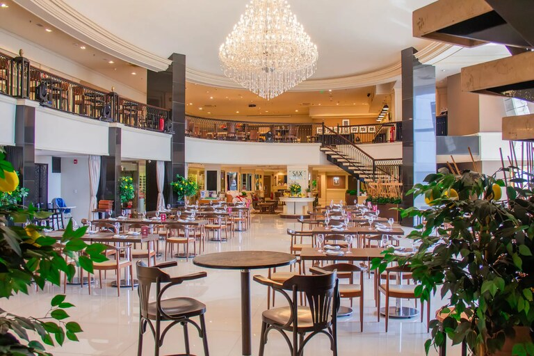
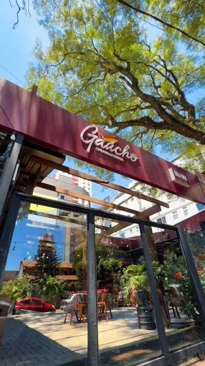
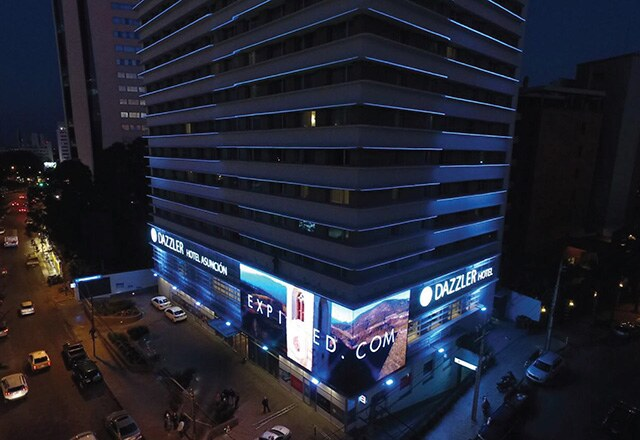
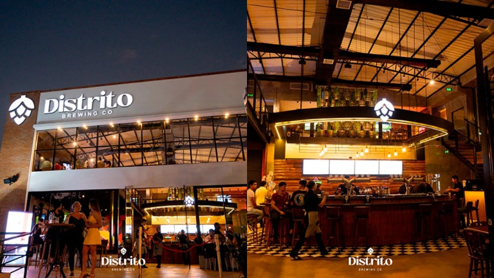

CIUDAD DEL ESTE
CIUDAD DEL ESTEBASE 01
Rio Hotel by Bourbon
Acesso facilitado aos polos comerciais, ambientes modernos, restaurante, bar e academia.
Uma imersão empresarial para enxergar mercados de perto, gerar conexões relevantes e transformar oportunidades em movimento.
Muito além de uma viagem empresarial
Uma agenda desenhada para quem quer compreender o mercado paraguaio por dentro: visitas técnicas, conversas estratégicas, gastronomia e networking em ambientes que aproximam pessoas e ideias.
Você sai do lugar conhecido para observar novos modelos, novas relações e novas possibilidades.
CIUDAD DEL ESTEAcesso facilitado aos polos comerciais, ambientes modernos, restaurante, bar e academia.

ASSUNÇÃOInfraestrutura contemporânea, piscina, academia e proximidade aos compromissos e à gastronomia.
Quatro experiências gastronômicas escolhidas para criar encontros memoráveis.




Uma imersão em empresas e instituições para entender o mercado, gerar conexões e enxergar novas oportunidades.
R$7.400,00
VALOR À VISTAFale com a equipe responsável e garanta sua participação na imersão.
Quero participar agora ↗